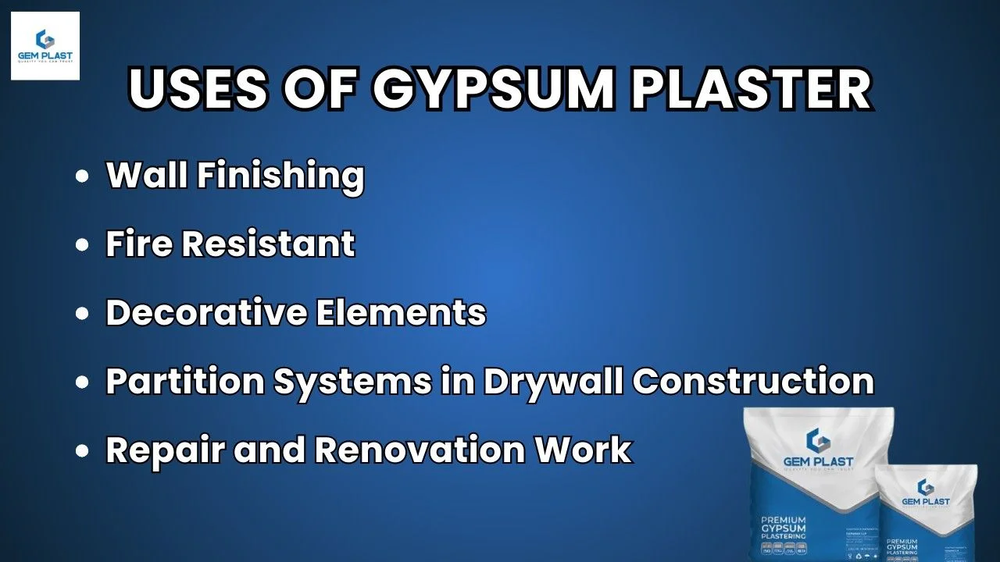

Top 5 Gypsum Plaster Uses In The Construction Industry
Gypsum plaster is a building material used in the modern construction industry. Gypsum plastering has become a trending method in plastering because of its benefits and convenience. Among the many gypsum plaster uses, the most common is creating smooth and crack-free finishes on interior walls and ceilings. Gypsum plastering is an important material because it provides a smooth, durable, and crack-free finish to walls and ceilings.
Gypsum plaster uses include covering rough brickwork, creating decorative mouldings, and providing a base for paint or wallpaper. It sets faster than traditional plasters, requires no curing, and is fire-resistant, making it a popular choice for modern construction. Its easy application and clean finish help speed up building projects while improving the overall look and safety.
Why Is Gypsum Plaster Popular in Modern Construction?
The excellent gypsum plaster properties, like quick setting and smooth finish, make it ideal for modern construction. It offers a cleaner, faster alternative to traditional plastering. What is gypsum plaster if not a smart solution for modern demands—it creates a polished, crack-resistant surface ready for paint or wallpaper within days. It’s also fire-resistant, sound-insulating, and environment friendly since it produces less dust and waste. Because of these benefits, contractors and interior designers prefer it for residential apartments, commercial buildings, and offices.
Applying gypsum plaster is simple but requires a consistent technique. It starts with mixing the powder with clean water to form a smooth paste. This is then spread evenly over the surface using a trowel. After setting in 25–30 minutes, it hardens without shrinking or cracking. The final result is a flawless finish that doesn’t need sanding. The importance of its applications lies in time efficiency, low maintenance, and improved indoor air quality. Whether for new constructions or renovation projects, gypsum plaster makes the job easier, faster, and more professional.
What Are Gypsum Plaster Uses in Construction?

Gypsum plaster is widely used in modern construction to create smooth, even wall and ceiling finishes. One of the main gypsum plaster uses is as a final coat over brick, concrete, or blockwork, replacing the traditional cement and sand plaster method. It is also used for decorative elements like cornices and ceiling mouldings. Because it dries quickly and doesn’t require water curing, it helps speed up the building process. The standard gypsum plaster thickness for internal walls is usually around 10–12 mm, which is enough to create a strong and uniform surface without adding too much weight.
1. Wall finishing
In construction, achieving a clean and attractive wall finish is essential. One of the most effective gypsum plaster uses is for wall finishing, especially in interior spaces. Good gypsum plastering work ensures a smooth and strong wall surface that’s ready for painting. One of the top reasons builders and designers prefer gypsum plaster is the incredibly smooth surface it delivers. After applying the material, the wall becomes silky and blemish-free, ready for paint, wallpaper, or decorative textures. This finish not only enhances the visual appeal but also adds value to the interior environment.
2. Fire Resistant
Another gypsum plaster uses in modern construction is its excellent fire resistance, which plays a vital role in improving building safety. Gypsum naturally contains water molecules that are released as steam when exposed to high temperatures, helping to slow down the spread of fire. This makes it an ideal material for use in fire-rated partitions and ceilings, especially in areas where fire protection is critical. Its ability to resist fire provides added safety in both residential and commercial spaces, making gypsum plaster a reliable and trusted choice for safer construction.
3. Decorative Elements
Among the many gypsum plaster uses, one of the most valued is its role in creating beautiful decorative elements such as cornices, mouldings, and ceiling roses. Its smooth texture and quick-setting nature make it ideal for crafting intricate designs that enhance the elegance of any interior. Because gypsum plaster is lightweight and easy to work with, it allows for detailed finishes without adding stress to the structure. These decorative features not only add aesthetic value but are also easy to install and maintain, making gypsum plaster a preferred material for architects and interior designers looking to create stylish, refined spaces.
4. Partition Systems in Drywall Construction
One of the most practical gypsum plaster uses in modern building is in partition systems for drywall construction. Gypsum is a key material in gypsum boards, which are commonly used to create lightweight and durable drywall partitions. These systems allow for quick installation with minimal mess, making them ideal for fast-paced commercial and office projects. They offer smooth finishes, sound insulation, and flexibility in design, all while keeping construction costs low. Thanks to its efficiency and clean application, gypsum plaster has become a go-to choice for creating functional and cost-effective partition walls in modern interior spaces.
5. Repair and Renovation Work
Another gypsum plaster uses is in repair and renovation work, where it’s ideal for patching cracks, holes, and damaged wall surfaces. Gypsum plaster sets quickly, allowing for fast repairs without long wait times, which is especially helpful in active homes or commercial spaces. Because it’s easy to apply and doesn’t shrink or crack after drying, gypsum plaster is a trusted solution for both minor touch-ups and larger renovation projects, offering reliability and a professional result every time.
Benefits of gypsum plaster in construction
UThe advantages of gypsum plaster make it a popular choice for smooth and quick wall finishing in modern buildings. Gypsum plaster offers a clean and crack-free surface that’s ideal for painting. It dries quickly and doesn’t need water curing like traditional cement plaster. Its lightweight nature and thermal insulation properties also add to its benefits.
1. Quick Setting Time
One of the major gypsum plaster uses in construction is its ability to set quickly. This fast setting time helps speed up the overall building process, allowing walls and ceilings to be finished and painted much sooner than with traditional cement plasters. What is gypsum plaster if not a modern, time-saving alternative? It eliminates the need for curing, which means builders can move to the next stage of construction without delays. This is especially helpful in large-scale projects or fast-paced renovations where time is critical.
2. Eco-Friendly and Recyclable
Gypsum plaster is also appreciated for its environmental benefits. It is made from a naturally occurring mineral and is fully recyclable, which reduces construction waste and supports green building practices. Among the many gypsum plaster uses, its role in sustainable construction stands out. Unlike cement-based materials, gypsum production emits less carbon dioxide, making it a better option for eco-conscious builders. With a standard gypsum plaster thickness of around 10–12 mm, it provides excellent wall coverage while minimising resource usage.
3. Energy-Efficient Due to Insulation Properties
Another key benefit of gypsum plaster is its thermal insulation. It helps regulate indoor temperatures by reducing heat transfer, which can lead to lower energy bills in both homes and commercial spaces. These insulation properties make gypsum plaster a smart choice for energy-efficient buildings. As a result, one of the most valuable gypsum plaster uses today is in climate-responsive architecture, where comfort and efficiency go hand in hand. When applied properly, even at typical gypsum plaster thickness levels, it contributes to a more stable and comfortable indoor environment year-round.
Conclusion
In conclusion, some of the top gypsum plaster uses in construction include smooth wall finishing, creating decorative elements, fire-resistant partitions, quick and clean drywall systems, and reliable repair work. When exploring gypsum plaster uses in construction, many people also compare gypsum plaster vs POP to decide which is better for their project Each use shows how versatile and efficient gypsum plaster can be across different building needs. Choosing the right material for the right purpose is essential for long-lasting results, and gypsum plaster stands out for its speed, safety, and sustainability. Whether you’re working on a new build, a renovation, or detailed interior design, gypsum plaster offers a smart, dependable solution that meets modern construction standards.

Leave a Comment